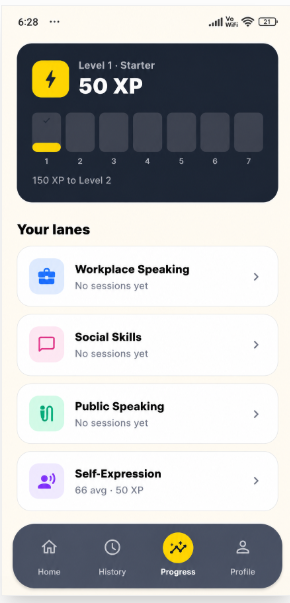

01 · The group hangout
Join the Circle
Step into group conversations with ease — without rehearsing every line in your head.
A social skills coach for the talks that actually happen: small talk, groups, dates, and hard moments.
Sounds familiar
You know what you want to say — until the moment arrives. Then the words freeze, the silence stretches, and the opportunity slips away.
01 · The group hangout
Step into group conversations with ease — without rehearsing every line in your head.
02 · The first date
Keep the conversation alive with natural openers, follow-ups, and presence.
03 · Small talk
Turn a first line into a real exchange — without sounding scripted or running out of things to say.
04 · The tough conversation
Disagree with calm and clarity — without turning tension into drama.
Sounds familiar?
Social confidence isn’t a personality trait — it’s a skill built through repetition. SpeechPal gives you the daily structure to become the speaker you already know you can be.
Short, focused practice for the conversations that actually show up in your life.
Know what landed, what to refine, and what to say next — while it’s still fresh.
Track streaks, XP, and growth — so improvement never stays invisible.
What you get
Real situations. Focused drills. Confidence that carries into the room.
Open, reply, and keep conversations moving — with prompts that replace overthinking with instinct.
Build warmth, clarity, and presence for everyday talks — from first impressions to hard conversations.
Roleplay the hangout, the date, and the awkward pause until showing up feels like a skill — not a test.
How it works
Four habits. A few minutes a day. Results you can feel in real conversations.
Short speaking drills and roleplay that train your voice for the moments that matter.
Absorb language, framing, and phrasing that make your next reply sharper and more natural.
Immediate feedback shows what’s working — so every session turns into measurable progress.
See your level, streaks, and growth across every practice lane — proof that consistency is compounding.

From the blog
Practical notes on confidence, conversations, and showing up.
Start the social reps that turn hesitation into ease — a few minutes a day is enough to begin.